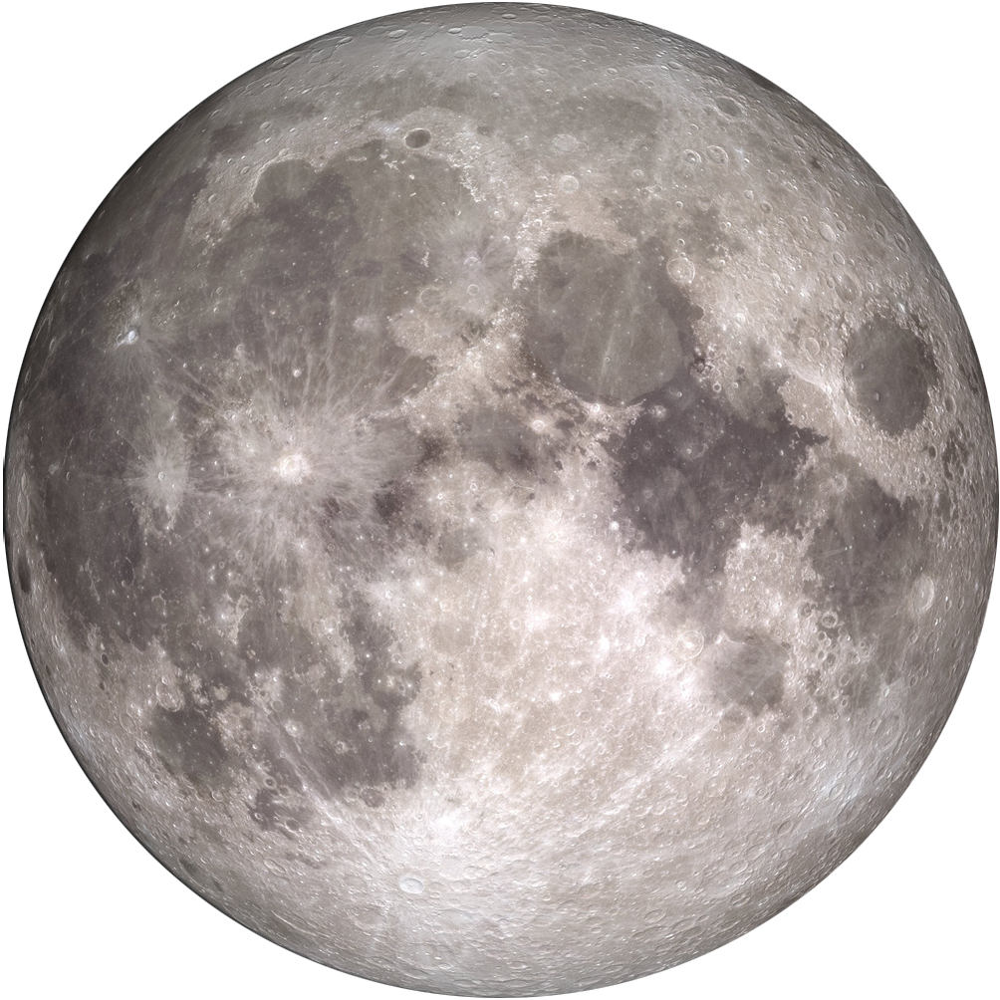
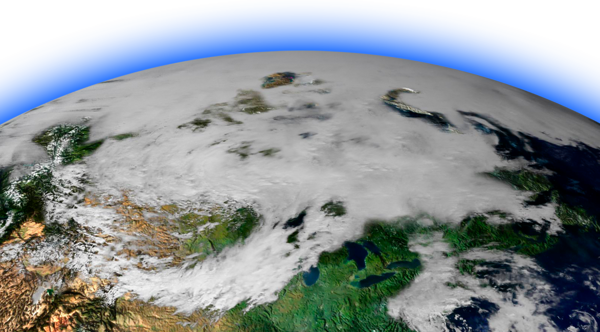

Back to the Moon
and Beyond
From Apollo to Artemis

July 14,
1964
Apollo 11
Apollo 12
Apollo 14
Apollo 15
Apollo 16
Apollo 17
December 19,
1972
December 11,
2017
Apollo 17’s 12-day mission to the Moon broke a number of records: the longest space walk, the longest lunar landing and the largest lunar samples brought back to Earth.
We haven’t been back since.
NASA announces we're returning to the Moon.
The Artemis spacesuits, designed for lunar exploration, represent a significant advancement over the Apollo suits. They offer enhanced mobility, improved safety features, and are designed for a wider range of tasks and environmental conditions. The Artemis suits are also designed for longer missions and are more customizable than their Apollo-era predecessors.
Compare the Apollo and Artemis spacesuit designs.